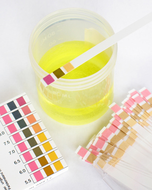

Module 8—Acid-Base Equilibrium
Lesson 5—Equilibrium Law and the Strength of Acids and Bases

© Christina Richards/shutterstock
 Get Focused
Get Focused
The pH of solutions provides important information about the equilibrium of acidic and basic solutes. In the previous lessons you used solution pH and molar concentration of the solute to calculate a percent ionization. In Module 7 you learned about equilibrium law and Kc, the equilibrium constant. Can Kc be calculated for acidic and basic solutions? What would a difference in the value for the equilibrium constant for two acids or bases tell you about their equilibrium?
You may recall reading in the textbook that the pH of rainwater is normally 5.5. The presence of dissolved carbon dioxide from the atmosphere in the rain droplets results in the formation of carbonic acid, which in turn ionizes to produce hydronium ions. Why is the pH of rainwater expected to be 5.5?
In this lesson you will investigate the use of quantitative techniques to describe the equilibrium of aqueous acids and bases. You will also investigate how the equilibrium influences the pH of both strong and weak acids and bases.
Consider the following questions as you complete Lesson 5:
- What are Ka, Kb, and Kw?
- How do Ka and Kb explain the position of the equilibrium of aqueous acids and bases?
- How are values for Ka and Kb used to calculate the pH of solutions containing weak acids and bases?
 Module 8: Lesson 5 Assignment
Module 8: Lesson 5 Assignment
There is no assignment for this lesson. Because of the nature of this lesson, the questions that are not marked by the teacher are very important. You should make an effort to ensure that you are confident with the calculations necessary to complete the work in this lesson before you proceed to Lesson 6.
You must decide what to do with the questions that are not marked by the teacher.
Remember that these questions provide you with the practice and feedback that you need to successfully complete this course. You should respond to all the questions and place those answers in your course folder.